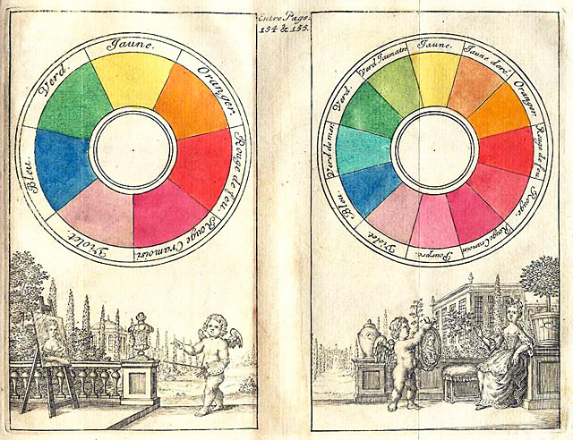
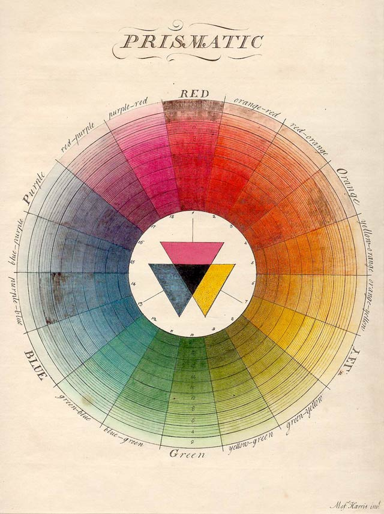
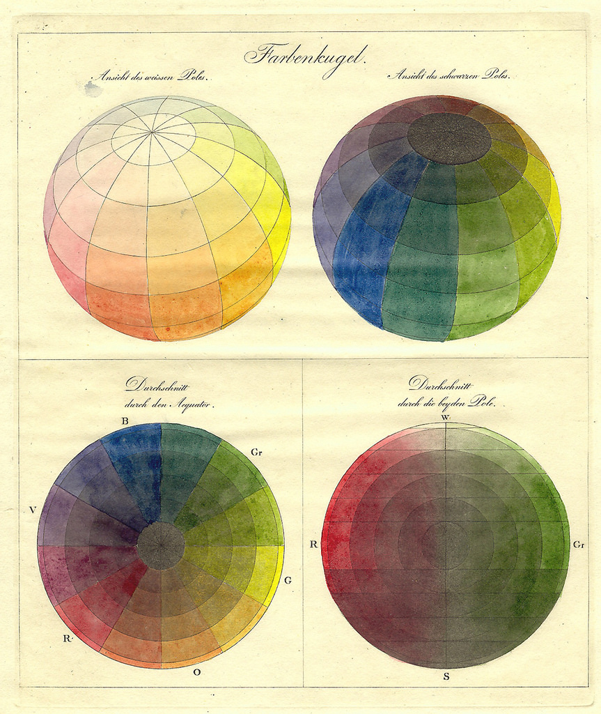

Discover the Evolution of Color Theory
Welcome to my Color Theory Website! The goal of this site is to explain the science and history of color theory. I'll share interesting historical perspectives and scientific research, as well as some interactive elements which will hopefully make the concepts more tangible.
Color in Art and Science

The science of color theory intersects with the fields of biology, optics, psychology, and physics. The history of color theory introduces you to many influential philosophers, scientists, artists and pioneers.
The Science of Color Theory, from Aristotle to Newton
The study of the origin and meaning of color begins largely with Aristotle, and follows the Aristotelian model until Newton devised his experiments on optics and light refraction. His studies revealed important principles of light and the different wavelengths of light that make color appear to us.
Goethe
Goethe challenges some of Newton's ideas in his work the Theory of Colour, in which he gave a new importance to the role of subjective human psychology and mood on our perceptions of color. He saw color as emerging not from different wavelengths of light, but from the interaction between light and shadow.
Color Theory in Art

Artists like Leonardo da Vinci conducted deep investigations into color in the service of their artwork. Through careful examination and relentless curiosity, Leonardo created his own system for dividing and depicting colors. His studies contribute to his paintings' naturalistic character.
Thank you!
Thank you for taking the time to visit my site.